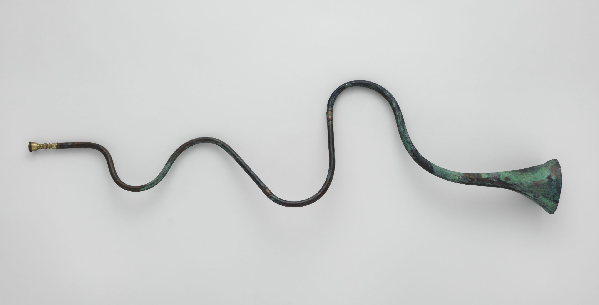
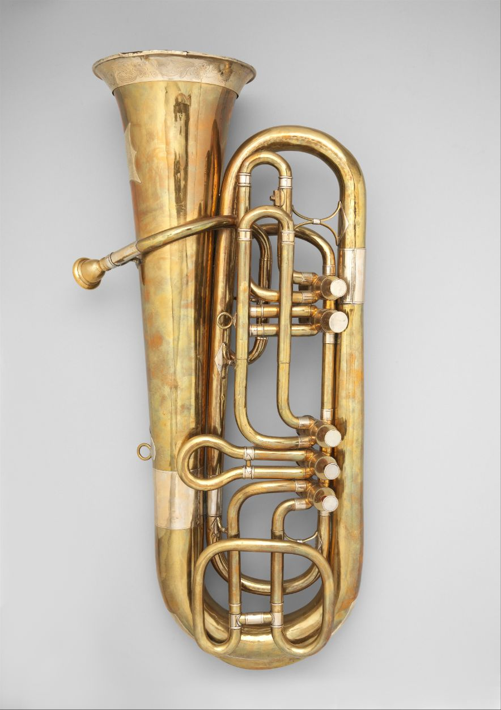

Aerophones are musical instruments that create sound by
causing a body of air to vibrate,
(typically through a blowing action).
Woodwinds and Brasswinds are most famous,
but humanity have found many ways
to create sounds using air...
How does the air column length affect the sound?
Cultures around the world have found creative ways
to increase air column length


.jpg "Trompette Demilune; Germany")
How long can they be? How low can they go?
"Shakuhachi"
Japan
567mm
"Basset Horn"
Germany
998mm
"Rag Dung"
Tibet
1675mm
This site was made using data from the Metropolitan Museum of Art
using D3.js, P5.js and Stack